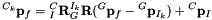

Table of Contents
Perspective Projection (Bearing) Measurement Model
Consider a 3D feature is detected from the camera image at time  , whose
, whose  measurement (i.e., the corresponding pixel coordinates) on the image plane is given by:
measurement (i.e., the corresponding pixel coordinates) on the image plane is given by:
![\begin{align*} \mathbf{z}_{m,k} &= \mathbf h(\mathbf x_k) + \mathbf n_k \\ &= \mathbf h_d(\mathbf{z}_{n,k}, ~\boldsymbol\zeta) + \mathbf{n}_k \\ &= \mathbf h_d(\mathbf h_p({}^{C_k}\mathbf{p}_f), ~\boldsymbol\zeta) + \mathbf{n}_k \\ &= \mathbf h_d(\mathbf h_p(\mathbf h_t({}^{G}\mathbf{p}_f,~{}^{C_k}_{G}\mathbf{R},~{}^{G}\mathbf{p}_{C_k})), ~\boldsymbol\zeta) + \mathbf{n}_k \\ &= \mathbf h_d(\mathbf h_p(\mathbf h_t(\mathbf h_r(\boldsymbol\lambda,\cdots),~{}^{C_k}_{G}\mathbf{R},~{}^{G}\mathbf{p}_{C_k})), ~\boldsymbol\zeta) + \mathbf{n}_k \end{align*}](form_169.png)
where  is the measurement noise and typically assumed to be zero-mean white Gaussian; is the normalized undistorted uv measurement;
is the measurement noise and typically assumed to be zero-mean white Gaussian; is the normalized undistorted uv measurement;  is the camera intrinsic parameters such as focal length and distortion parameters; is the feature position in the current camera frame ; is the feature position in the global frame
is the camera intrinsic parameters such as focal length and distortion parameters; is the feature position in the current camera frame ; is the feature position in the global frame  ; denotes the current camera pose (position and orientation) in the global frame (or camera extrinsics); and is the feature's parameters of different representations (other than position) such as simply a xyz position or an inverse depth with bearing.
; denotes the current camera pose (position and orientation) in the global frame (or camera extrinsics); and is the feature's parameters of different representations (other than position) such as simply a xyz position or an inverse depth with bearing.
In the above expression, we decompose the measurement function into multiple concatenated functions corresponding to different operations, which map the states into the raw uv measurement on the image plane. It should be noted that as we will perform intrinsic calibration along with extrinsic with different feature representations, the above camera measurement model is general. The high-level description of each function is given in the next section.
Measurement Function Overview
| Function | Description |
|---|---|
| The distortion function that takes normalized coordinates and maps it into distorted uv coordinates | |
| The projection function that takes a 3D point in the image and converts it into the normalized uv coordinates | |
| Transforming a feature's position in the global frame into the current camera frame | |
| Converting from a feature representation to a 3D feature in the global frame |
Jacobian Computation
Given the above nested functions, we can leverage the chainrule to find the total state Jacobian. Since our feature representation function might also depend on the state, i.e. an anchoring pose, we need to carefully consider its additional derivatives. Consider the following example of our measurement in respect to a state  Jacobian:
Jacobian:
![\begin{align*} \frac{\partial \mathbf{z}_k}{\partial \mathbf{x}} = \frac{\partial \mathbf h_d (\cdot) }{\partial \mathbf{z}_{n,k}} \frac{\partial \mathbf h_p (\cdot) }{\partial {}^{C_k}\mathbf{p}_f} \frac{\partial \mathbf h_t (\cdot) }{\partial \mathbf{x}} + \frac{\partial \mathbf h_d (\cdot) }{\partial \mathbf{z}_{n,k}} \frac{\partial \mathbf h_p (\cdot) }{\partial {}^{C_k}\mathbf{p}_f} \frac{\partial \mathbf h_t (\cdot) }{\partial {}^{G}\mathbf{p}_f} \frac{\partial \mathbf h_r (\cdot) }{\partial \mathbf{x}} \end{align*}](form_184.png)
In the global feature representations, see Point Feature Representations section, the second term will be zero while for the anchored representations it will need to be computed.
Distortion Function
Radial model
To calibrate camera intrinsics, we need to know how to map our normalized coordinates into the raw pixel coordinates on the image plane. We first employ the radial distortion as in OpenCV model:
![\begin{align*} \begin{bmatrix} u \\ v \end{bmatrix}:= \mathbf{z}_k &= \mathbf h_d(\mathbf{z}_{n,k}, ~\boldsymbol\zeta) = \begin{bmatrix} f_x * x + c_x \\ f_y * y + c_y \end{bmatrix}\\[1em] \empty {\rm where}~~ x &= x_n (1 + k_1 r^2 + k_2 r^4) + 2 p_1 x_n y_n + p_2(r^2 + 2 x_n^2) \\\ y &= y_n (1 + k_1 r^2 + k_2 r^4) + p_1 (r^2 + 2 y_n^2) + 2 p_2 x_n y_n \\[1em] r^2 &= x_n^2 + y_n^2 \end{align*}](form_185.png)
where are the normalized coordinates of the 3D feature and u and v are the distorted image coordinates on the image plane. The following distortion and camera intrinsic (focal length and image center) parameters are involved in the above distortion model, which can be estimated online:

Note that we do not estimate the higher order (i.e., higher than fourth order) terms as in most offline calibration methods such as Kalibr. To estimate these intrinsic parameters (including the distortation parameters), the following Jacobian for these parameters is needed:
Similarly, the Jacobian with respect to the normalized coordinates can be obtained as follows:
Fisheye model
As fisheye or wide-angle lenses are widely used in practice, we here provide mathematical derivations of such distortion model as in OpenCV fisheye.
where are the normalized coordinates of the 3D feature and u and v are the distorted image coordinates on the image plane. Clearly, the following distortion intrinsic parameters are used in the above model:
In analogy to the previous radial distortion case, the following Jacobian for these parameters is needed for intrinsic calibration:
![\begin{align*} \frac{\partial \mathbf h_d (\cdot)}{\partial \boldsymbol\zeta} = \begin{bmatrix} x_n & 0 & 1 & 0 & f_x*(\frac{x_n}{r}\theta^3) & f_x*(\frac{x_n}{r}\theta^5) & f_x*(\frac{x_n}{r}\theta^7) & f_x*(\frac{x_n}{r}\theta^9) \\[5pt] 0 & y_n & 0 & 1 & f_y*(\frac{y_n}{r}\theta^3) & f_y*(\frac{y_n}{r}\theta^5) & f_y*(\frac{y_n}{r}\theta^7) & f_y*(\frac{y_n}{r}\theta^9) \end{bmatrix} \end{align*}](form_192.png)
Similarly, with the chain rule of differentiation, we can compute the following Jacobian with respect to the normalized coordinates:
![\begin{align*} \frac{\partial \mathbf h_d(\cdot)}{\partial \mathbf{z}_{n,k}} &= \frac{\partial uv}{\partial xy}\frac{\partial xy}{\partial x_ny_n}+ \frac{\partial uv}{\partial xy}\frac{\partial xy}{\partial r}\frac{\partial r}{\partial x_ny_n}+ \frac{\partial uv}{\partial xy}\frac{\partial xy}{\partial \theta_d}\frac{\partial \theta_d}{\partial \theta}\frac{\partial \theta}{\partial r}\frac{\partial r}{\partial x_ny_n} \\[1em] \empty {\rm where}~~~~ \frac{\partial uv}{\partial xy} &= \begin{bmatrix} f_x & 0 \\ 0 & f_y \end{bmatrix} \\ \empty \frac{\partial xy}{\partial x_ny_n} &= \begin{bmatrix} \theta_d/r & 0 \\ 0 & \theta_d/r \end{bmatrix} \\ \empty \frac{\partial xy}{\partial r} &= \begin{bmatrix} -\frac{x_n}{r^2}\theta_d \\ -\frac{y_n}{r^2}\theta_d \end{bmatrix} \\ \empty \frac{\partial r}{\partial x_ny_n} &= \begin{bmatrix} \frac{x_n}{r} & \frac{y_n}{r} \end{bmatrix} \\ \empty \frac{\partial xy}{\partial \theta_d} &= \begin{bmatrix} \frac{x_n}{r} \\ \frac{y_n}{r} \end{bmatrix} \\ \empty \frac{\partial \theta_d}{\partial \theta} &= \begin{bmatrix} 1 + 3k_1 \theta^2 + 5k_2 \theta^4 + 7k_3 \theta^6 + 9k_4 \theta^8\end{bmatrix} \\ \empty \frac{\partial \theta}{\partial r} &= \begin{bmatrix} \frac{1}{r^2+1} \end{bmatrix} \end{align*}](form_193.png)
Perspective Projection Function
The standard pinhole camera model is used to project a 3D point in the camera frame into the normalized image plane (with unit depth):
whose Jacobian matrix is computed as follows:
Euclidean Transformation
We employ the 6DOF rigid-body Euclidean transformation to transform the 3D feature position in the global frame to the current camera frame based on the current global camera pose:
Note that in visual-inertial navigation systems, we often keep the IMU, instead of camera, state in the state vector. So, we need to further transform the above geometry using the time-invariant IMU-camera extrinsic parameters as follows:
Substituting these quantities into the equation of  yields:
yields:

We now can compute the following Jacobian with respect to the pertinent states:
where denotes the skew symmetric matrix of a vector  (see Quaternion TR [22]). Note also that in above expression (as well as in ensuing derivations), there is a little abuse of notation; that is, the Jacobian with respect to the rotation matrix is not the direct differentiation with respect to the 3x3 rotation matrix, instead with respect to the corresponding 3x1 rotation angle vector. Moreover, if performing online extrinsic calibration, the Jacobian with respect to the IMU-camera extrinsics is needed:
(see Quaternion TR [22]). Note also that in above expression (as well as in ensuing derivations), there is a little abuse of notation; that is, the Jacobian with respect to the rotation matrix is not the direct differentiation with respect to the 3x3 rotation matrix, instead with respect to the corresponding 3x1 rotation angle vector. Moreover, if performing online extrinsic calibration, the Jacobian with respect to the IMU-camera extrinsics is needed:
Point Feature Representations
There are two main parameterizations of a 3D point feature: 3D position (xyz) and inverse depth with bearing. Both of these can either be represented in the global frame or in an anchor frame of reference which adds a dependency on having an "anchor" pose where the feature is observed. To allow for a unified treatment of different feature parameterizations  in our codebase, we derive in detail the generic function
in our codebase, we derive in detail the generic function  that maps different representations into global position.
that maps different representations into global position.
Global XYZ
As the canonical parameterization, the global position of a 3D point feature is simply given by its xyz coordinates in the global frame of reference:
It is clear that the Jacobian with respect to the feature parameters is:
Global Inverse Depth
The global inverse-depth representation of a 3D point feature is given by (akin to spherical coordinates):
The Jacobian with respect to the feature parameters can be computed as:
Global Inverse Depth (MSCKF VERSION)
Note that as this representation has a singularity when the z-distance goes to zero, it is not recommended to use in practice. Instead, one should use the Anchored Inverse Depth (MSCKF Version) representation. The anchored version doesn't have this issue if features are represented in a camera frame that they where seen from (in which features should never have a non-positive z-direction).
Anchored XYZ
We can represent a 3D point feature in some "anchor" frame (say some IMU local frame, ), which would normally be the IMU pose corresponding to the first camera frame where the feature was detected.
The Jacobian with respect to the feature state is given by:

As the anchor pose is involved in this representation, its Jacobians are computed as:
Moreover, if performing extrinsic calibration, the following Jacobians with respect to the IMU-camera extrinsics are also needed:
Anchored Inverse Depth
In analogy to the global inverse depth case, we can employ the inverse-depth with bearing (akin to spherical coordinates) in the anchor frame, , to represent a 3D point feature:
![\begin{align*} {}^{G}\mathbf{p}_f &= \mathbf f(\boldsymbol\lambda,~{}^{I_a}_{G}\mathbf{R},~{}^{G}\mathbf{p}_{I_a},~{}^{C}_{I}\mathbf{R},~{}^{C}\mathbf{p}_{I}) \\ &= {}^{I_a}_{G}\mathbf{R}^\top{}^{C}_{I}\mathbf{R}^\top({}^{C_a}\mathbf{p}_f-{}^{C}\mathbf{p}_{I}) + {}^{G}\mathbf{p}_{I_a} \\ &= {}^{I_a}_{G}\mathbf{R}^\top{}^{C}_{I}\mathbf{R}^\top\Bigg(\frac{1}{\rho}\begin{bmatrix} \cos(\theta)\sin(\phi) \\ \sin(\theta)\sin(\phi) \\ \cos(\phi) \end{bmatrix}-{}^{C}\mathbf{p}_{I}\Bigg) + {}^{G}\mathbf{p}_{I_a} \\ \text{where} &\quad \boldsymbol\lambda = \begin{bmatrix} \theta & \phi & \rho \end{bmatrix}^\top \end{align*}](form_216.png)
The Jacobian with respect to the feature state is given by:

The Jacobians with respect to the anchor pose are:
The Jacobians with respect to the IMU-camera extrinsics are:
Anchored Inverse Depth (MSCKF Version)
Note that a simpler version of inverse depth was used in the original MSCKF paper [16]. This representation does not have the singularity if it is represented in a camera frame the feature was measured from.
![\begin{align*} {}^{G}\mathbf{p}_f &= \mathbf f(\boldsymbol\lambda,~{}^{I_a}_{G}\mathbf{R},~{}^{G}\mathbf{p}_{I_a},~{}^{C}_{I}\mathbf{R},~{}^{C}\mathbf{p}_{I}) \\ &= {}^{I_a}_{G}\mathbf{R}^\top{}^{C}_{I}\mathbf{R}^\top({}^{C_a}\mathbf{p}_f-{}^{C}\mathbf{p}_{I}) + {}^{G}\mathbf{p}_{I_a} \\ &= {}^{I_a}_{G}\mathbf{R}^\top{}^{C}_{I}\mathbf{R}^\top\Bigg(\frac{1}{\rho}\begin{bmatrix} \alpha \\ \beta \\ 1 \end{bmatrix}-{}^{C}\mathbf{p}_{I}\Bigg) + {}^{G}\mathbf{p}_{I_a} \\ \text{where} &\quad \boldsymbol\lambda = \begin{bmatrix} \alpha & \beta & \rho \end{bmatrix}^\top \end{align*}](form_218.png)
The Jacobian with respect to the feature state is:
The Jacobians with respect to the anchor state are:
The Jacobians with respect to the IMU-camera extrinsics are:
Anchored Inverse Depth (MSCKF Single Depth Version)
This feature representation is based on the MSCKF representation [16], and the the single depth from VINS-Mono [19]. As compared to the implementation in [19], we are careful about how we handle treating of the bearing of the feature. During initialization we initialize a full 3D feature and then follow that by marginalize the bearing portion of it leaving the depth in the state vector. The marginalized bearing is then fixed for all future linearizations.
Then during update, we perform nullspace projection at every timestep to remove the feature dependence on this bearing. To do so, we need at least two sets of UV measurements to perform this bearing nullspace operation since we loose two dimensions of the feature in the process. We can define the feature measurement function as follows:
![\begin{align*} {}^{G}\mathbf{p}_f &= \mathbf f(\boldsymbol\lambda,~{}^{I_a}_{G}\mathbf{R},~{}^{G}\mathbf{p}_{I_a},~{}^{C}_{I}\mathbf{R},~{}^{C}\mathbf{p}_{I}) \\ &= {}^{I_a}_{G}\mathbf{R}^\top{}^{C}_{I}\mathbf{R}^\top({}^{C_a}\mathbf{p}_f-{}^{C}\mathbf{p}_{I}) + {}^{G}\mathbf{p}_{I_a} \\ &= {}^{I_a}_{G}\mathbf{R}^\top{}^{C}_{I}\mathbf{R}^\top\Big(\frac{1}{\rho}\hat{\mathbf{b}}-{}^{C}\mathbf{p}_{I}\Big) + {}^{G}\mathbf{p}_{I_a} \\ \text{where} &\quad \boldsymbol\lambda = \begin{bmatrix} \rho \end{bmatrix} \end{align*}](form_220.png)
In the above case we have defined a bearing which is the marginalized bearing of the feature after initialization. After collecting two measurement, we can nullspace project to remove the Jacobian in respect to this bearing variable.